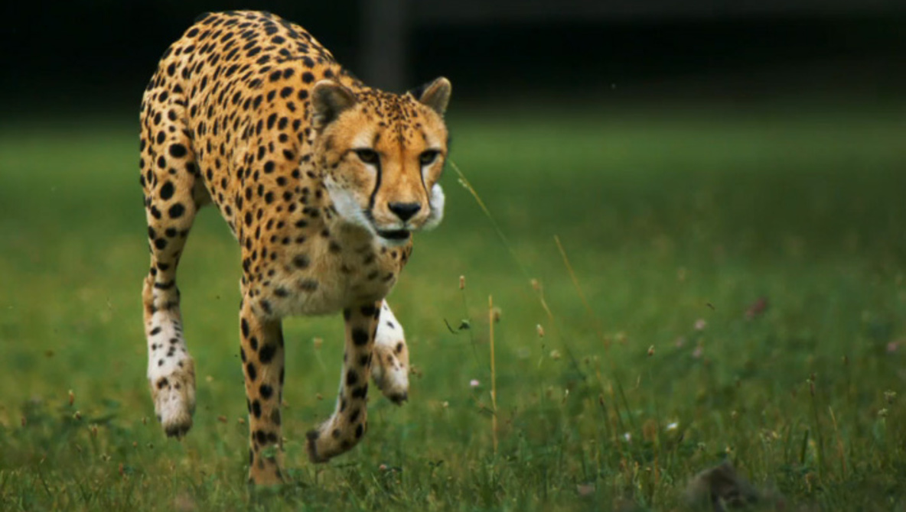
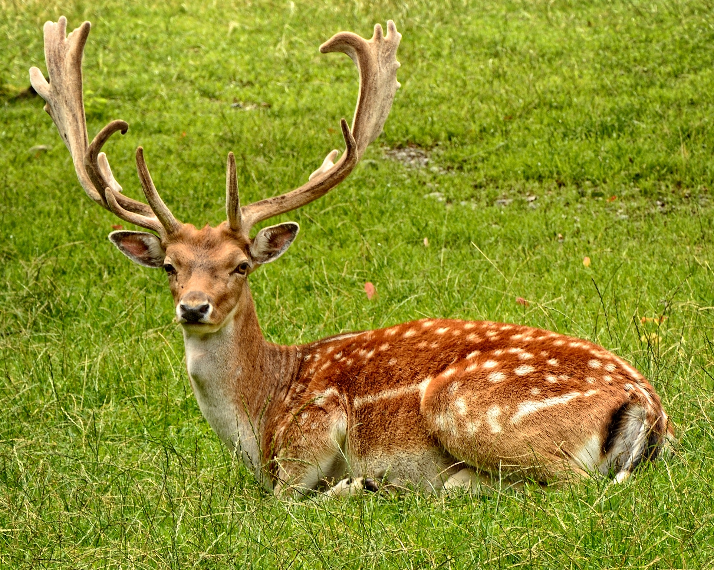
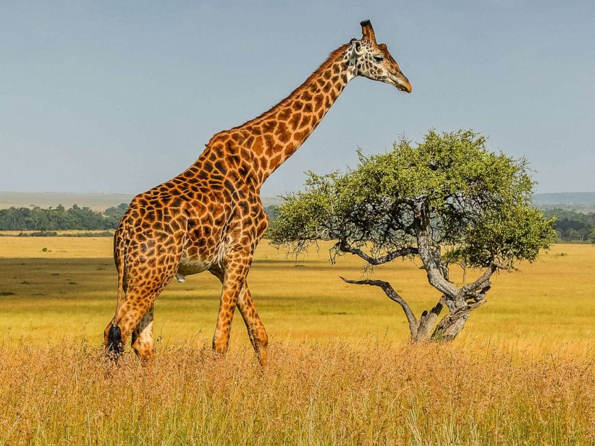
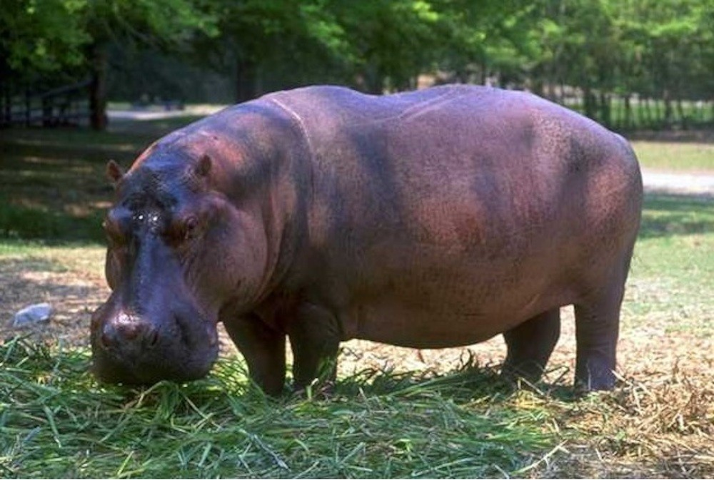
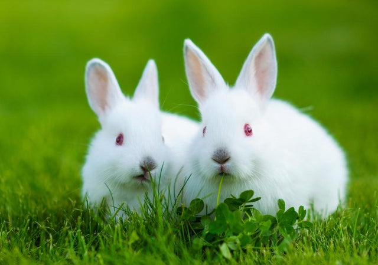

Fun Facts
1. Tigers are the largest cat species in the world reaching up to 3.3 meters in length and weighing up to 670 pounds!
2. Tigers are easily recognizable with their dark vertical stripes and reddish/orange fur.
3. The Bengal tiger is the most common tiger.
4. Tigers live between 20-26 years in the wild.
5. Cubs are born blind and only open their eyes 1-2 weeks after birth.

1. Cheetahs are the fastest land mammal in the world!
2. Cheetahs weigh between 69 to 140 pounds and can be 4 feet (1.2 meters) long.
3. Cheetha don't like to fight.
4. Cheetah have brilliant eyesight. They can see upto 3miles away!.
5. Cheetah hunt in the day time. Cheetahs do not roar like lions or tigers.

1. Lions are the only cats that live in groups.A group, or pride, can be up to 30 lions, depending on how much food and water is available.
2. Female lions are the main hunters. While they’re out looking for food, the males guard the pride’s territory and their young.
3. A lion’s roar can be heard up to eight kilometres away.
4. Lions are the laziest of all the big cats, and can sleep for 16-20 hours each day.
5. The main two types of lion are the African and the Asian but there are thought to be eight in total. The list are
Barbary lion,Asiatic lion,West African lion,Masai lion,Congo lion,Southwest African lion,Transvaal lion,Ethiopian lion.

1. Deer are part of the Cervidae family that include moose, reindeer, elk and other species.
2. Male deer grow new antlers each year.
3. Deer take their first steps within half an hour of their birth.
4. A male deer is usually called a ‘buck’. A large male deer is often called ‘stag’.
5. A female deer is usually called a ‘doe’. A young deer is usually called a ‘fawn’. A group of deer is known as a ‘herd’.

1. Giraffes are the tallest mammals on Earth. Their legs alone are taller than many humans—about 6 feet.
2. They can run as fast as 35 miles an hour over short distances, or cruise at 10 mph over longer distances.
3. Giraffes only need to drink once every few days. Most of their water comes from all the plants they eat.
4. Giraffes spend most of their lives standing up; they even sleep and give birth standing up.
5. Giraffes only need 5 to 30 minutes of sleep in a 24-hour period!They often achieve that in quick naps that may last only a minute or two at a time.

1. Hippos are considered the second largest land animal on Earth. Males measure around 3.5m long and 1.5m tall, and can weigh up 3,200kg.
2. Hippos are most active at night, when they forage for food. They are herbivores, and eat mostly grass –
and boy do they eat grass! In just one night, they can guzzle down up to 35kg of their favourite grub!.
3. Hippos are great swimmers and can hold their breath for up to five minutes underwater.
4. Hippos usually live in groups (or “herds”) of around ten to 20 individuals, led by one large dominant male.
5. In the wild hippos live for around 40 years. In captivity, they tend to live longer and may reach up to 50 years old.

1. A baby rabbit is called a kit, a female is called a doe and a male is called a buck.
2. Rabbits are very social creatures that live in groups. They live in warrens — a series of tunnels and rooms that they dig underground.
3. Rabbits’ eyes are on the sides of their head, meaning they can see almost all the way around them.
4. Rabbits are amazing athletes — they can jump as high as 90 centimetres in one leap!.
5. One of the world’s best-known rabbits is the Warner Bros cartoon character,
Bugs Bunny — who’s often seen munching on a carrot! In fact, carrots aren’t a natural part of a rabbit’s diet
and can give bunnies an upset stomach if they eat too many.

1. Our planet is home to three different species of zebra, the plains zebra, Grevy’s zebra and mountain zebra, all three species are native to Africa.
2. Closely related to horses, zebras have thick bodies, thin legs, a tufted tail,
and a long head and neck sporting a short mane. And their most famous feature? Their brilliant black-and-white striped coat, of course!
3. So why do zebras have stripes? Well, scientists aren’t entirely sure. Their stripes perhaps serve to dazzle
and confuse predators and biting insects, or to control the animal’s body heat. Because each individual’s stripes are unique,
their stripes may also have a social purpose, helping zebras to recognise one other.
4. A group of zebras is called a Dazzle.
5. Zebra can travel long distances. Zebras are black animals with white strips.